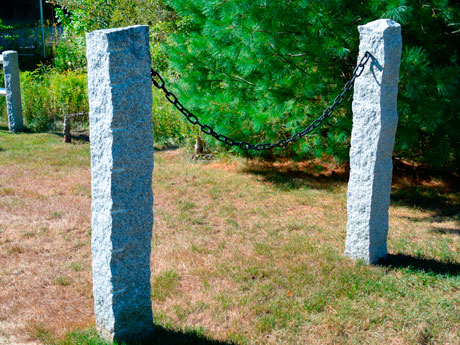
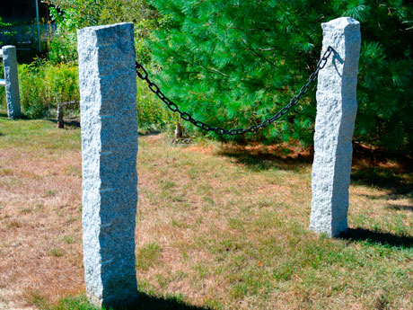

Other Services
We have a number of other services that we offer other than memorials. Check them out here.
Desk Plaques
Add the executive touch to your work desk with a solid granite or marble desk plaque. These plaques can be customized with a name, title and/or company logo. You choose the color and lettering style. Granite desk plaques make the perfect gift for that friend or relative that already has “everything”.


House Plaques
Granite house plaques make the perfect gift for weddings, new homeowners, and that “hard to buy for” person in your life. These plaques come in a variety of sizes and options. Standard house plaques are rectangle in shape with the family name engraved. Tile size house plaques come in other shapes and are etched with a scene, or your own photo. These plaques can be lettered with names, street address, house number, or be used as a simple WELCOME sign.

Steps
Granite steps are the perfect choice for durability and beauty. These steps hold up to all kinds of weather, and are not affected by ice melting chemicals. They won’t chip or crack from the freeze/thaw process, or degrade over time like wood, brick and concrete. Granite steps are virtually maintenance free. We can make your granite steps in the custom sizes you need. Granite steps come in a variety of colors and finishes.
Hearths & Mantles
The natural beauty of granite hearths and mantles can add charm and warmth to the interior of any home or business. We offer a variety of colors and finishes for hearths, mantles, fireplace surrounds, or full hearths for your wood, pellet or coal stove. Granite can handle the high intensity heat from fireplaces and heating stoves.

Landscaping
We offer many options for landscaping products. Please see the items offered below.
Bird Baths & Fountains
Reward your hard work by complimenting your landscaping design or garden with one of these ornamental products. Our bird baths and fountains come in a variety of styles, colors, and sizes to fit in your area perfectly.
Driveway & Garden Edging
Granite is the perfect material to use for lasting borders and curbing along driveways, lawns and patios. Garden edging adds to the beauty of your yard, and separates your landscaping from your walkways. Driveway edging provides a strong edge for snow removal and keeps your lawn where it should be, and also helps lengthen the life of your paved driveway. We can provide you with a few feet to surround your flower garden, or a few hundred feet for a large driveway project.
Posts
These beautiful granite posts add character, charm and strength to all landscapes. We offer many options for posts such as mailbox posts, lamp posts, fence posts, hitching posts, etc. These posts come in a variety of styles, colors, finishes, and sizes. We can also engrave the posts with your last name, house number, street address, etc.
 


Thresholds
Add some character to your home with custom thresholds, which work great in many areas around your home. Here is an example of a threshold.